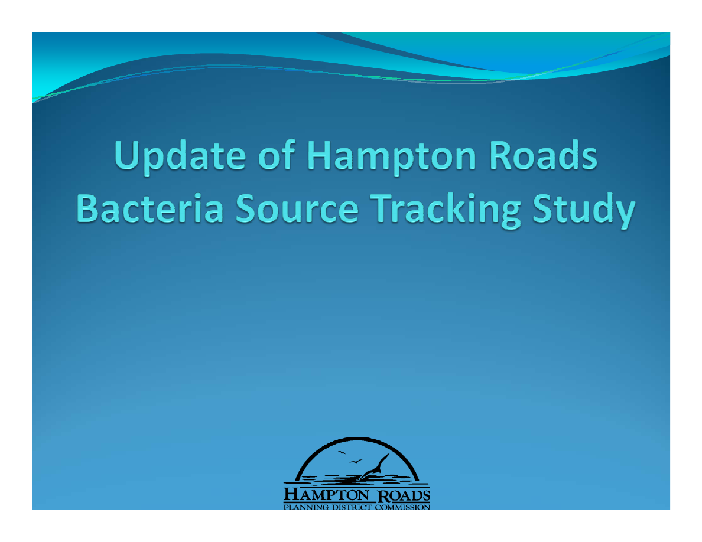
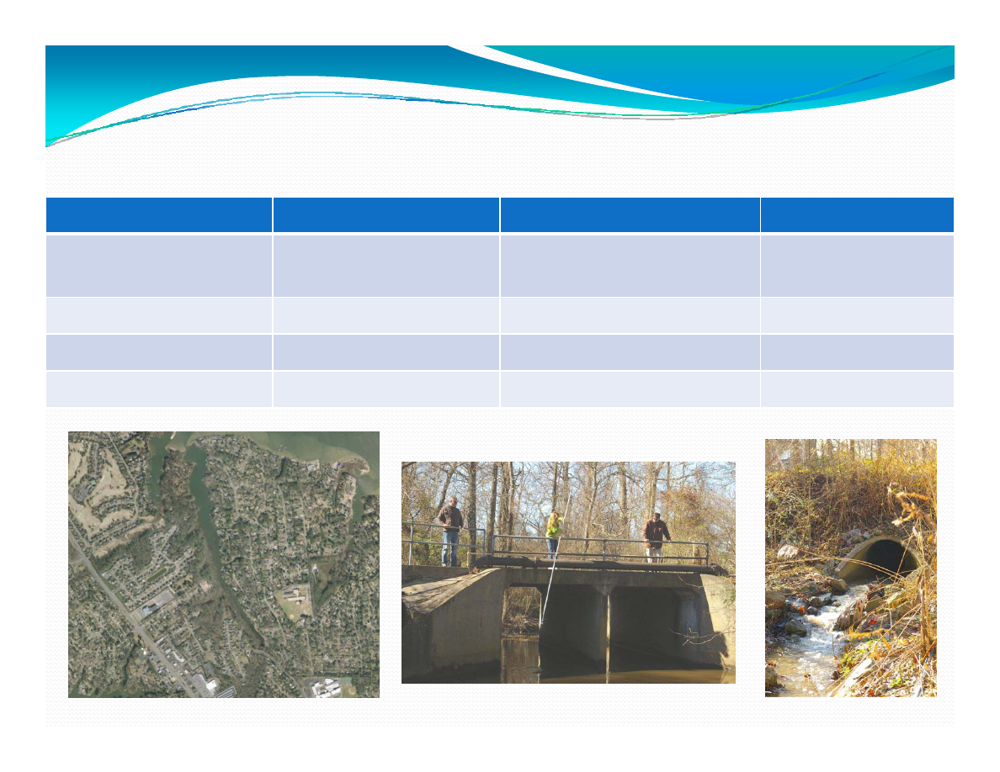
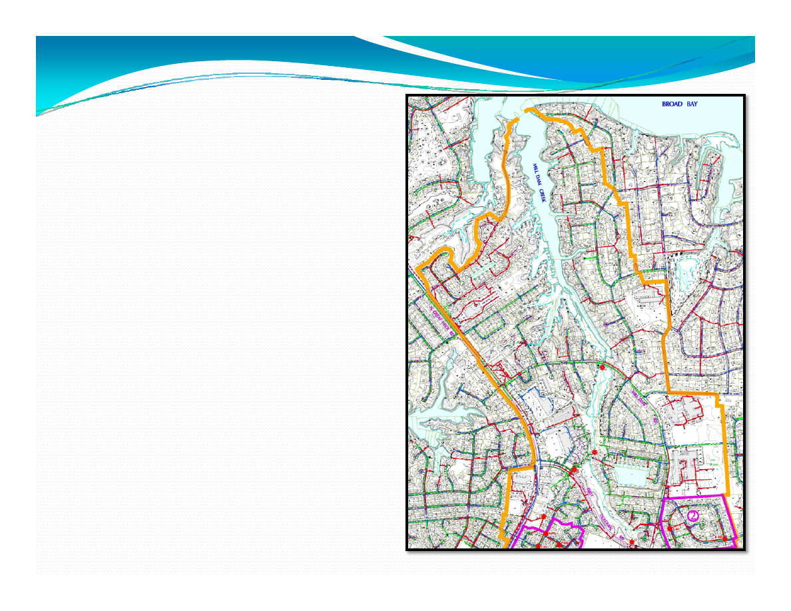
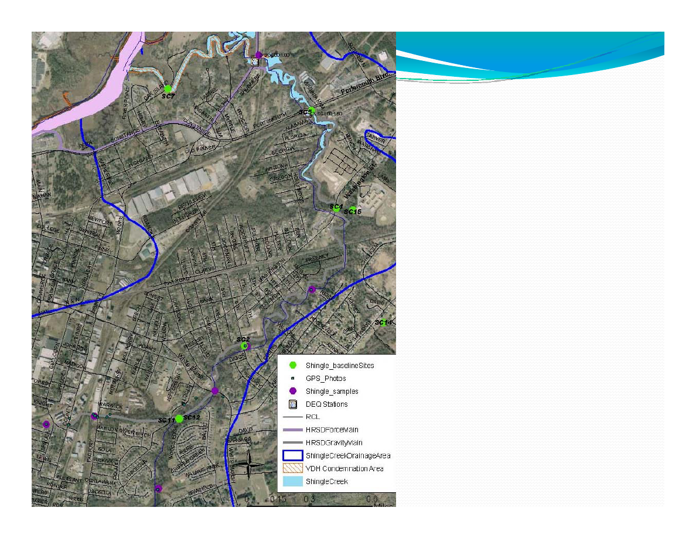
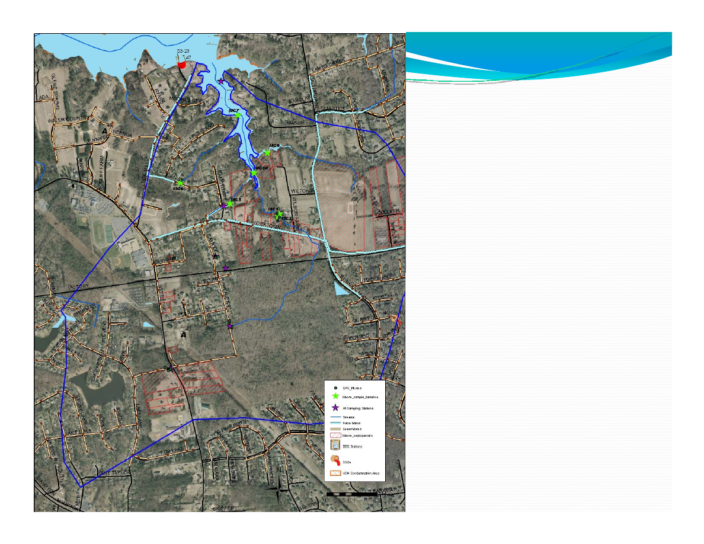

Hampton Roads Planning District Commission
May 19, 2010
By
Jennifer Tribo

Drivers for Study
y
Impaired waters throughout Region
y
Outdated source tracking methodologies in
TMDL Studies
y
Shotgun style implementation plans
y
Need tools to link stormwater requirements and
TMDL limits
y
Evaluate / Validate SSO efforts and guide future
sewer rehab efforts.

Purpose of the Bacteria Study
1.
Develop a Protocol for source
identification in the Region.
2.
Identify the methodologies necessary to
differentiate human sources of bacteria
from non human

Hampton Roads Study Approach
y
Step 1: Watershed Survey
y
Step 2: Targeted sampling for fecal indicator
bacteria – “hot spot” identification.
y
Step 3: Application of Molecular Methods:
multiple methods will be utilized to minimize
error.
y
Step 4: Further Molecular Analysis

Case Study Overview
Mill Dam Creek
Shingle Creek
Moores Creek
Land Use
Mixed Urban
Single family/Light
Industrial
Low density
residential
Sewer/Septic
Sewered
Mixed
Mixed
Agriculture Present
No
No
Yes
Tidal Influence
Yes
Minimal
Yes

Mill Dam Creek –
Virginia Beach
•
“Hot Spots” Identified
•
Molecular analysis for human
markers
•
Targeting headwaters and wet
weather events

•
Baseline sampling
locations selected
•
City staff collecting
indicator bacteria samples
•
Targeting wet weather
events
•
Identify hot spots for
molecular analysis
Shingle Creek‐
Suffolk

•
Baseline sampling
locations selected
•
County staff collecting
indicator bacteria samples
•
Targeting wet weather
events
•
Identify hot spots for
molecular analysis
Moores Creek –
York County

Schedule
y
Spring 2010 – Complete Fecal Indicator Bacteria Screening
y
Summer 2010– Targeted Sampling
y
Fall – Winter 2010 – Molecular Analysis
y
Spring 2011 – Follow up monitoring
y
Summer 2011 – Final Report